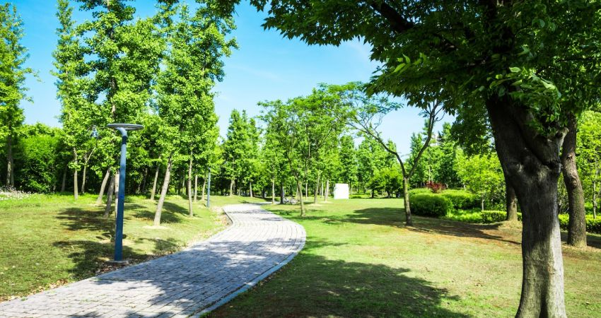

Las áreas verdes del CECyTEM son espacios ecológicos dentro de sus planteles
donde la comunidad escolar impulsa jornadas de reforestación y cuidado ambiental.
Estudiantes y docentes participan en el riego,
limpieza y protección de las plantas sembradas para asegurar su crecimiento.
Se realizan actividades como la campaña estatal "Regresa a clases plantando un árbol"
